gcc/c++链接极简实践
1.1 背景
常有同事被链接问题困扰，大部分是一些较常见的问题。链接这种问题，部分同事不太重视。这里做一些总结，相信可以解决这些同学80%的问题。
1.2 基础知识
1.2.1 链接参数
- -L
-L用于增加链接库的查找目录 - -I
-l 用于指定库文件，-lx表示链接libx.so或者libx.a - -static
使用静态库。使用了该参数，没有静态库，即便是有动态库也不会使用动态库 - -fPIC
64位下编译静态库要用到 - -Wl,-Bstatic和-Wl,-Bdynamic
-Wl,-Bstatic参数后的链接库使用静态链接；
-Wl,-Bdynamic参数后的链接库使用动态链接；
两者合用就可以实现同时使用动态库和静态库。如果使用了-Wl,-Bstatic，那么其后面必须后-Wl,-Bdynamic，否则系统库可能会链接不了而报错。
1.2.2 默认搜索库路径
gcc默认搜索/lib，/usr/lib下的库，也有系统也会默认搜索/usr/local/lib下面的库
1.2.3 动态库优先于静态库
如果有同名的静态库和静态库（后缀前的都相同，如libx.so和libx.a是同名的），那么会链接动态库。可以使用-static、-Wl,-Bstatic和-Wl,-Bdynamic来改变。
1.2.4 被依赖的库放在后面
如果链接的库之间有依赖关系，那么被依赖的静态库要放在依赖它的库后面。例如libb.so或者libb.a依赖liba.a，那么liba.a要放在libb.so或者libb.a后面。
1.3 工具
1.3.1 nm
列出文件中的符号。用nm可以看出定义的和未定义的符号。
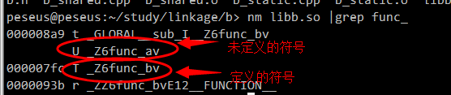
1.3.2 ldd
显示共享库(含可执行文件)的依赖情况。通过ldd可以知道共享库依赖哪些文件
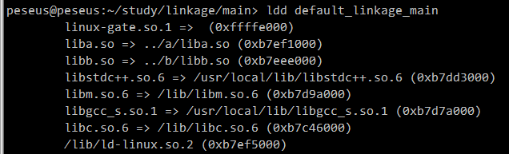
1.4 实践
用极简的例子实践，可以更快速和深入理解这些基础的知识，更好的掌握工具的使用。
1.4.1 练习程序如下：
依赖关系：
main => b => a
main/b/a与c没有任何依赖关系
main/makefile定义了很多例子，用来联系上面提到的基础知识

1.4.2 被依赖的库要放在依赖它的库后面
目标positonerrorlinkagemain把liba.a写在前面，将导致无法链接
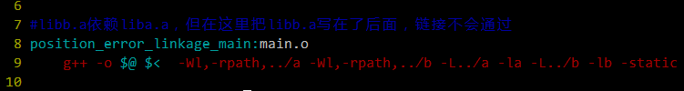
make positonerrorlinkagemain运行结果：
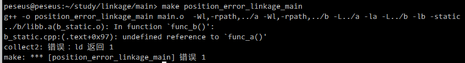
目标staticlinkagemain和目标positonerrorlinkagemain的区别在于liba.a和libb.a的顺序调转
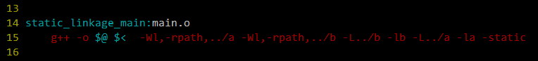
make staticlinkagemain：
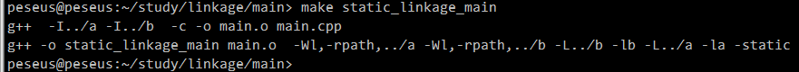
./staticlinkage_main运行结果：
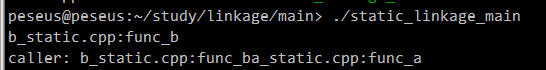
1.4.3 动态库优先于静态库链接
目标defaultlinkagemain依赖库文件a和库文件b。a目录和b目录同时存在动态库和静态库。
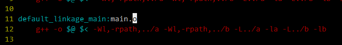
make defaultlinkagemain：
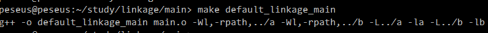
查看defaultlinkagemain的依赖关系：
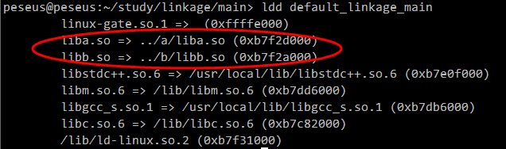
说明链接的是动态库
1.4.4 使用静态链接
目标staticlinkagemain使用静态链接。使用静态链接后，即便是存在动态库，但不存在动态库，也会链接不上
删除liba.so和libb.so，然后：
make staticlinkagemain：
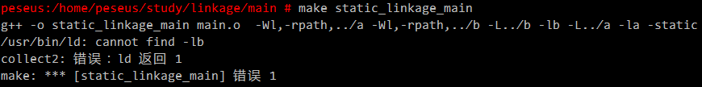
1.4.5 混用静态链接和动态链接
目标mixlinkagemain混用动态链接和静态链接，会链接静态库liba.a和动态库libb.so
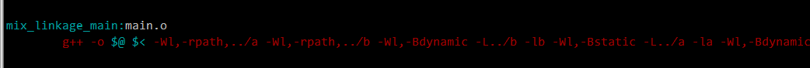
运行make mixlinkagemain
查看mixlinkagemain的依赖关系
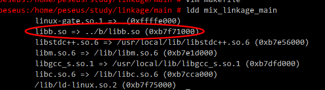
说明只动态链接了b库，而a库是静态链接的
1.4.6 使用nm查看未定义的函数
库b依赖库a的funca函数，通过nm可以看出来libb.a和libb.so中有一个未定义的符号funca：
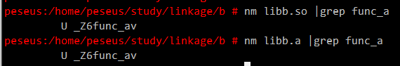
1.4.7 其他
main/makefile中还定义了其他的目标供自行练习
1.4.8 附件
附件是练习例子，下载后可以自行实践。